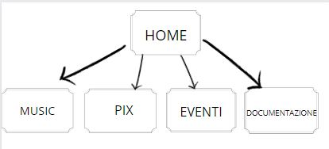
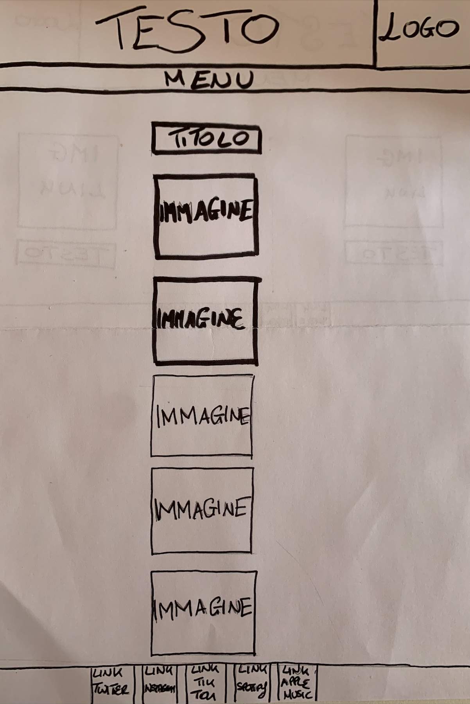

Il progetto nasce come sito personale di Alice Mezzetti, in arte Still Alice, per promuovere l’inizio della sua carriera musicale, l’uscita del muovo singolo “No rest for the dreamers” e il singolo “To be you” già presente nelle piattaforme di streaming. Il sito viene modificato regolarmente con l’intento di di tenere aggiornati i vari utenti
Obiettivi: il sito vuole essere un mezzo in grado di racchiudere tutti quegli elementi che permettono di conoscere meglio l‘artista e di semplificare il raggiungimento delle diverse pagine social e piattaforme streaming.
Target utente: il target utente primario è composto da ragazz* di età compresa tra i 15 e i 30 anni e appassionati di musica Indie/pop.
Competitors: I competitors sono altri siti personali di artisti già affermati e di artisti emergenti. Tra i casi analizzati ci sono i siti di “Wallows - official website” e “The official website of Spencer Sutherland”. Anche in queste pagine, gli artisti hanno cercato di far emergere la propria personalità e il proprio stile musicale tramite un layout personalizzato.
Architettura del sito:
Wireframe Home:

Wireframe Pix:
Wireframe eventi:

Wireframe Documentazione:

Look and feel: lo sfondo del sito, che si ripete per tutte le pagine del menu, è la foto ufficiale di Still Alice, utilizzata anche per i profili delle piattaforme di streaming. Il nome Still Alice, font “Angella White Personal”, è lo stesso che compare nella copertina del singolo “No rest for the dreamers” e che verrà utilizzato anche per alcuni titoli all’interno delle pagine. Il font utilizzato per le pagine del menu e il testo della all’interno della header è “Copperplate”. Il colore principale del testo è il bianco tranne per alcuni titoli dove viene utilizzata una text-shadow #A65D9D.
Linguaggi utilizzati: html e css
Strumenti: sublime text 2 (per la scrittura del codice); bootstrap (per alcune parti di codice); w3school (per alcuni suggerimenti); google fonts; fontawesome (per cercare icone); Canva (font e colori); Github (per pubblicazione del sito); Google Analytics (per il monitoraggio del sito); Instagram (per promozione del sito).
Il sito “Still Alice official website”, rispetto a siti competitors, è una pagina semplice e facilmente fruibile dagli utenti, che si distingue per l’originalità e l’estetica che richiama la personalità dell’artista. Inoltre offre una maggiore comprensione dello stile di vita di Still Alice tramite la sezione PIX.
L’obiettivo principale del sito web è quello di far conoscere l’artista e promuovere la sua musica. Inoltre il sito cerca un contatto più diretto offrendo un collegamento rapido alle pagine social e di music streaming per aumentare l’engagement su tutte le piattaforme digitali. I social media sono anche strumento principale di interazione con i vari utenti che si spera diventino poi ascoltatori.
Il target utente primario è composto da ragazz* di età compresa tra i 15 e i 30 anni e appassionati di musica Indie/pop, che vengono giornalmente informati dei vari eventi e uscite musicali tramite le varie piattaforme social.
All’interno del sito sono stati inseriti i vari link alle varie pagine ufficiali dell’artista, così da poter seguire i diversi contenuti, anche visivi (post e video), che ha da offrire.
Per la valutazione dei risultati, verrà consultato Google Analytics, così da verificare l’efficacia del sito.